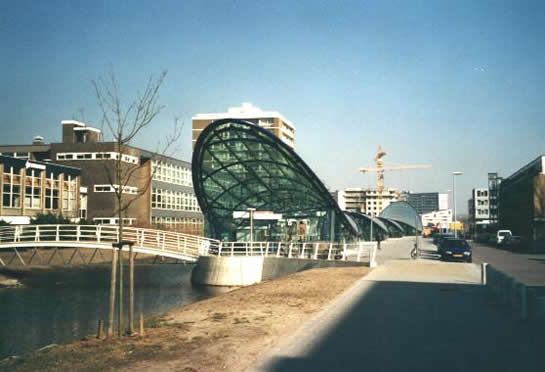

10 jaar Beneluxlijn
- vrijdag 09 november 2012 16:49
- Geschreven door Simon
Vandaag is het exact 10 jaar geleden dat de exploitatie op de Beneluxlijn startte. Op maandag 4 november 2002 werd het tracé Marconiplein-Tussenwater in gebruik genomen en konden passagiers in- en uitstappen op de toen zes nieuwe stations. Het betrof de stations Schiedam Centrum, Parkweg, Troelstralaan, Vijfsluizen, Pernis en Tussenwater. Alle stations op de 11,8 kilometer lange metrolijn werden ontworpen door een andere architect.
Station Parkweg, het enige metrostation op de Beneluxlijn dat volledig ondergronds is.
De Beneluxlijn werd officieel geopend op 2 november 2002. Daarbij werden twee vierwagentreinen van het type SG2/1 ingezet. Deze twee treinen reden naast elkaar van station Tussenwater naar station Schiedam Centrum. Daar werden de festiviteiten afgesloten. De Schiedamse televisiezender LookTV maakte een reportage over de opening.
Deel 1.
Deel 2.
Zie ook de historiepagina over de Beneluxlijn.